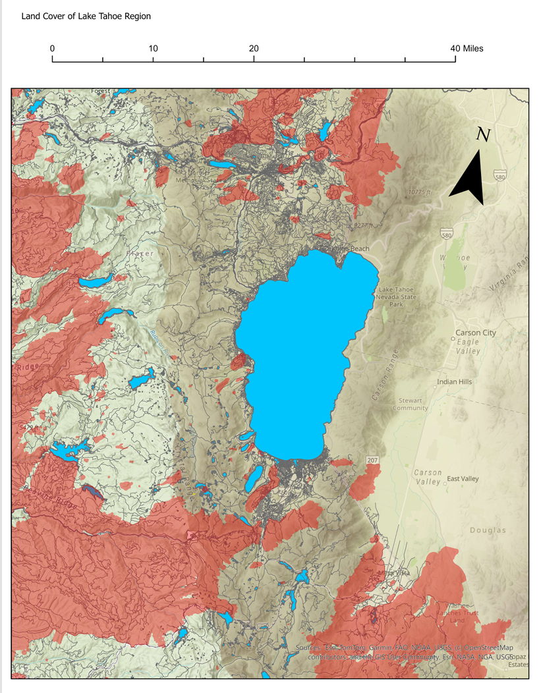
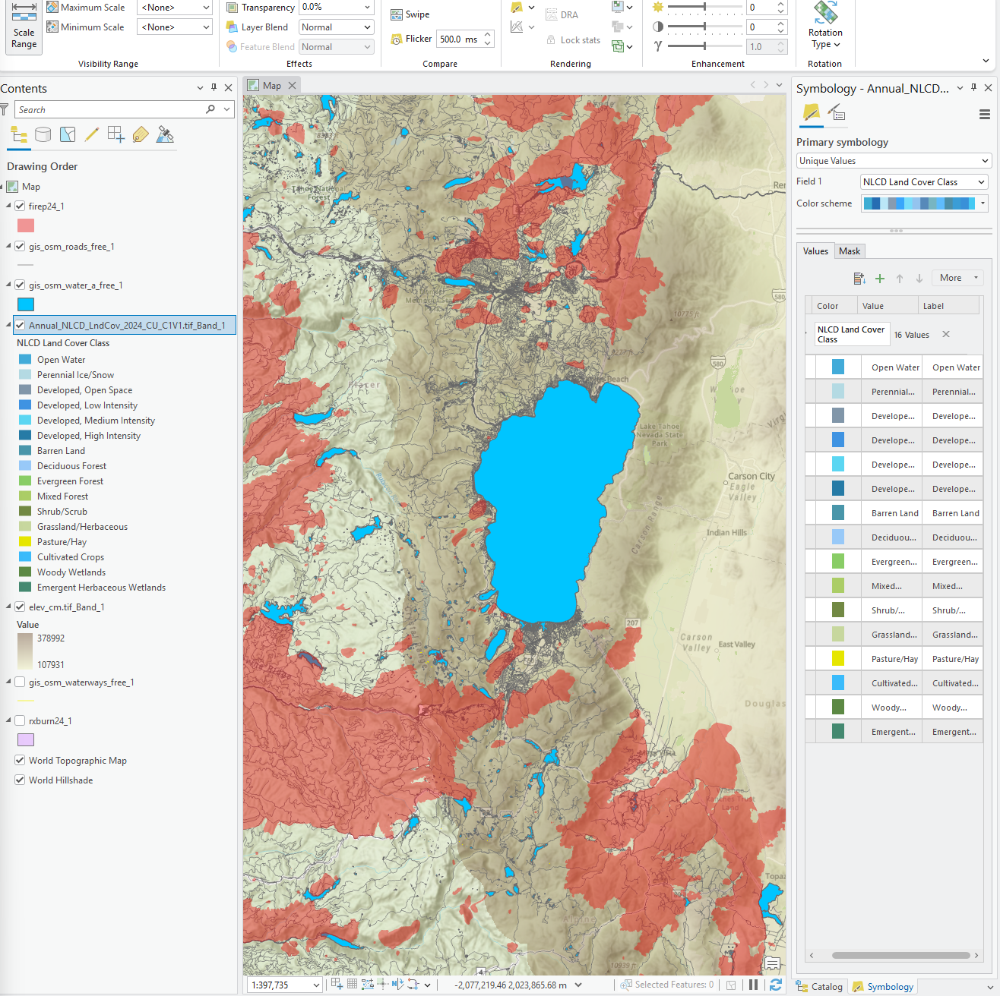

ArcGIS Pro • Environmental GIS
Wildfire Risk and Land Cover Analysis — Lake Tahoe Region
This project combines wildfire perimeter data, NLCD land cover, elevation, OpenStreetMap roads, and water features to visualize how wildfire activity relates to vegetation, terrain, and human infrastructure around Lake Tahoe.
Workflow
- Acquired raster and vector datasets from public GIS sources.
- Prepared layers in ArcGIS Pro and organized them by map purpose.
- Symbolized wildfire, water, roads, land cover, and elevation for readability.
- Built a final cartographic layout with scale bar and north arrow.
What this shows
The map highlights how wildfire perimeters overlap with forested and mountainous areas, while roads and development are concentrated around the lake and other accessible corridors.

